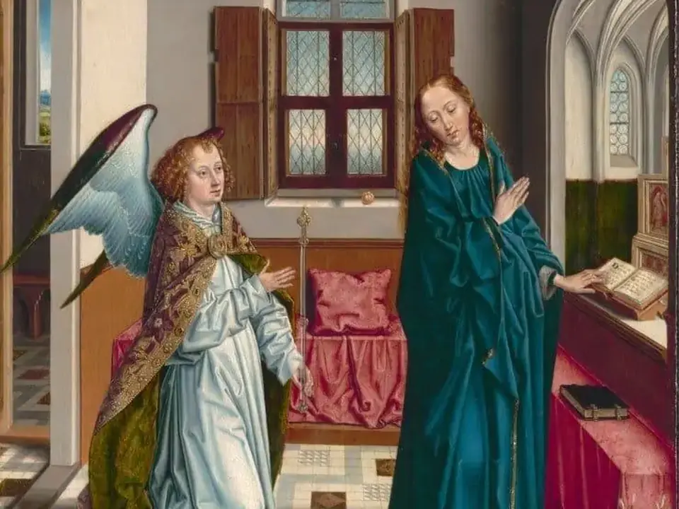
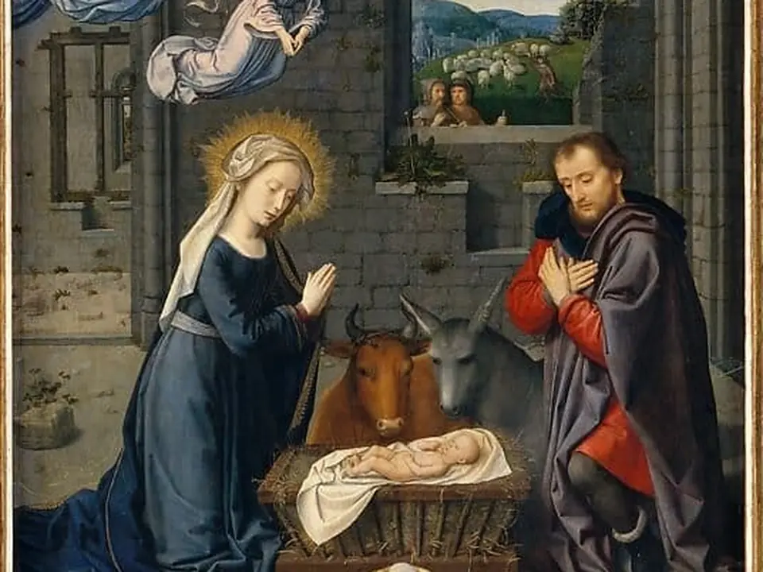
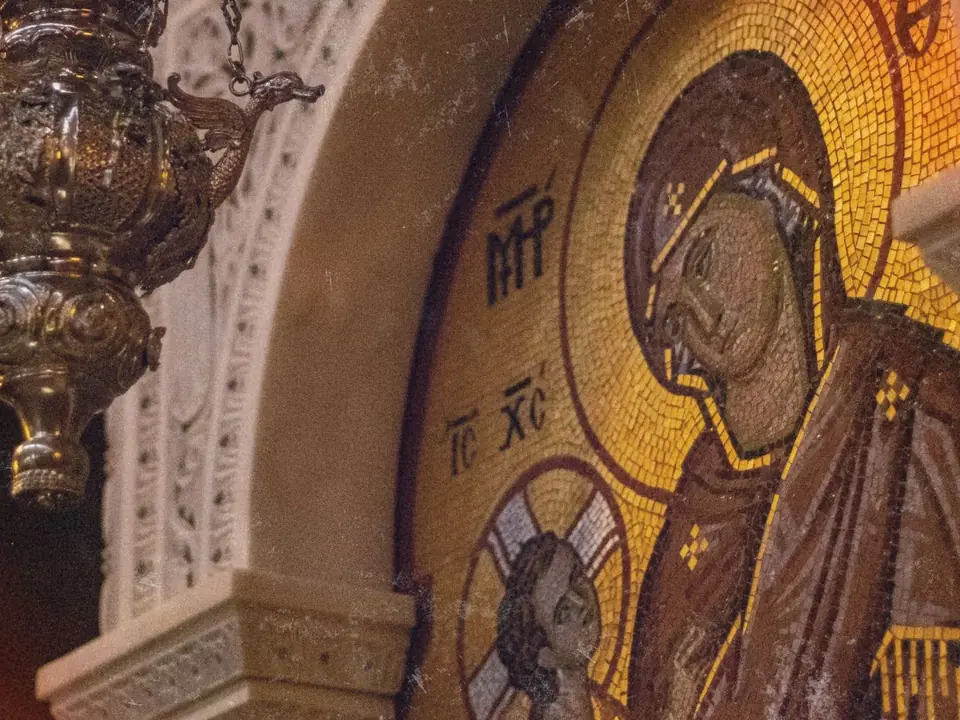
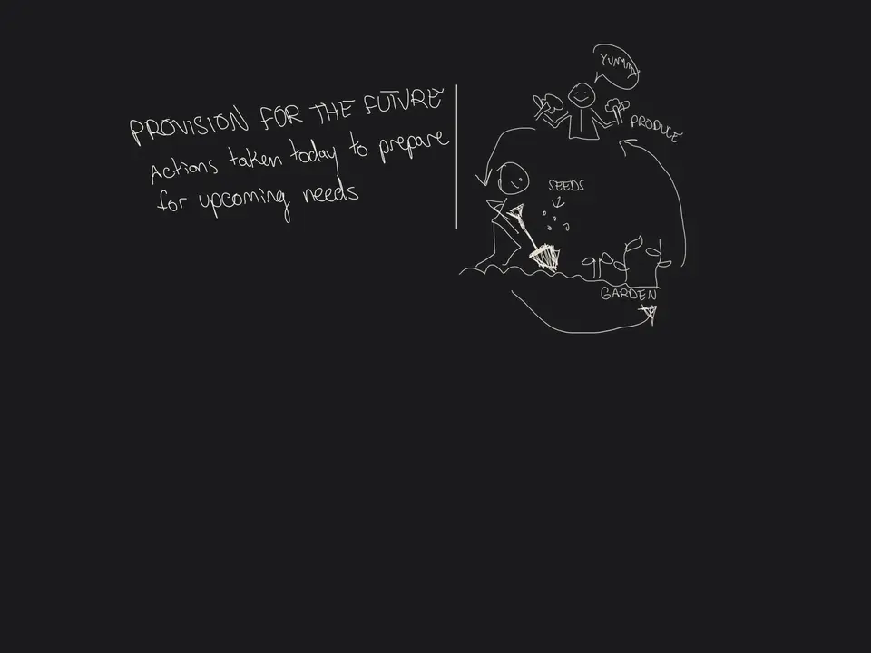
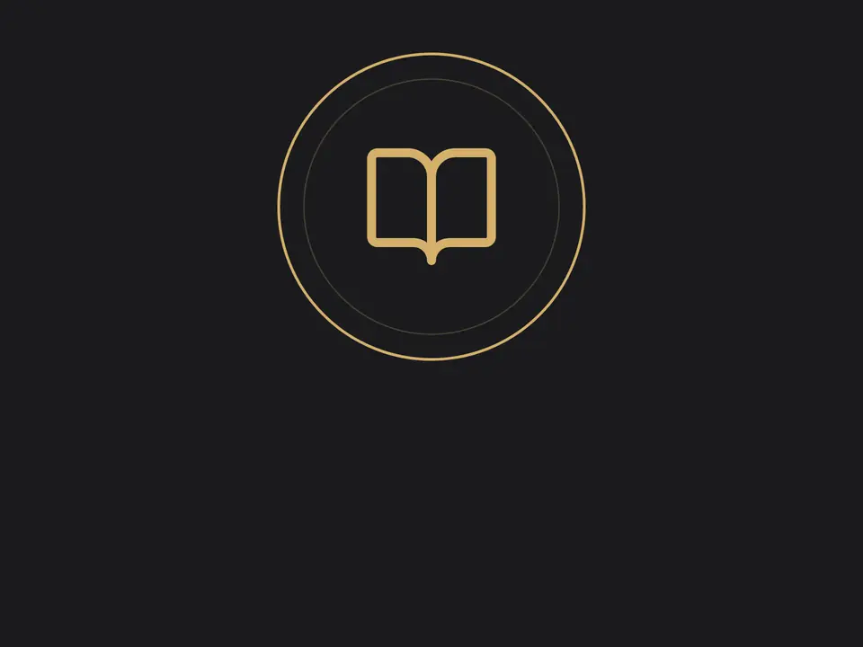

Free · Human-made · No accounts
Six quiet places to pray, see, listen, read and learn in the Catholic tradition.

Pray
A sacred painting for every prayer, with hymns to pray along to.
Begin →illuminatedrosary.com
See
Public domain paintings, coloring pages and photos, free for anyone.
Browse →sdcason.com
Listen
Lofi, chapel pop and ambient music based on Eastern and Western prayers.
Listen →methodius.media
Read
Encyclicals, Fathers and saints a little at a time. Sketch to remember.
Start reading →catholicsketchbook.com
Learn
Short video lessons from Scripture and the Catechism, with a quiz to check yourself.
Take a course →courses.sdcason.comFor kids
Catholic songs, videos and books for children, free to watch and sing along.
Play →kids.sdcason.com